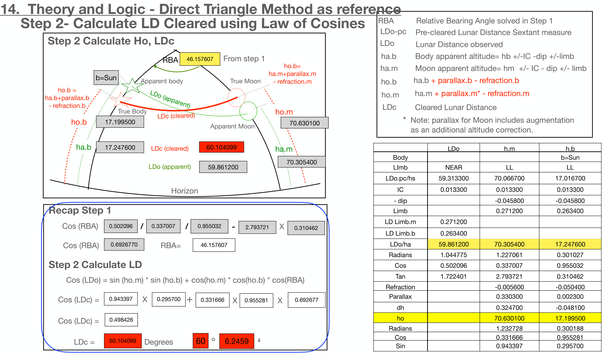

Full-size illustration. Scroll to inspect the details.

14. Theory and Logic - Direct Triangle Method as reference
Step 2- Calculate LD Cleared using Law of Cosines
RBA Relative Bearing Angle solved in Step 1 LDo-pc Pre-cleared Lunar Distance Sextant measure
Step 2 Calculate Ho, LDc
LDo Lunar Distance observed
ha.b Body apparent altitude= hb +/-IC -dip +/-limb
46.157607
From step 1
RBA
ha.m Moon apparent altitude= hm +/- IC - dip +/- limb
ho.b= ha.m+parallax.m
b=Sun
Apparent body True Moon
- refraction.m
ho.b ha.b + parallax.b - refraction.b
ho.m ha.m + parallax.m* - refraction.m
ho.b = ha.b+parallax.b
- refraction.b
LDo (apparent)
LDc Cleared Lunar Distance
True Body
ho.m
LDc (cleared)
17.199500
ho.b
70.630100
Apparent Moon
* Note: parallax for Moon includes augmentation as an additional altitude correction.
17.247600
ha.b
60.104099 LDc (cleared)
ha.m
LDo h.m h.b Body b=Sun
70.305400
LDo (apparent) 59.861200
LImb NEAR LL LL
LDo.pc/hs 59.313300 70.066700 17.016700
IC 0.013300 0.013300 0.013300
Horizon
- dip -0.045800 -0.045800
Limb 0.271200 0.263400
Recap Step 1
LD Limb.m 0.271200
Cos (RBA) 0.502096 / 0.337007 / 0.955032 - 2.793721 X 0.310462
LD Limb.b 0.263400
LDo/ha 59.861200 70.305400 17.247600
Cos (RBA) 0.6926770
RBA= 46.157607
Radians 1.044775 1.227061 0.301027
Cos 0.502096 0.337007 0.955032
Step 2 Calculate LD
Tan 1.722401 2.793721 0.310462
Cos (LDo) = sin (ho.m) * sin (ho.b) + cos(ho.m) * cos(ho.b) * cos(RBA)
Refraction -0.005600 -0.050400 Parallax 0.330300 0.002300
Cos (LDc) = 0.943397 X 0.295700 + 0.331666 X 0.955281 X 0.692677
dh 0.324700 -0.048100
ho 70.630100 17.199500
Cos (LDc) = 0.498426
LDc = 60.104099
Radians 1.232728 0.300188 Cos 0.331666 0.955281 Sin 0.943397 0.295700
Degrees 60 ° 6.2459 ‘